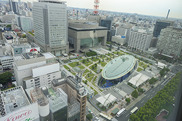

豊田市は愛知県北部に位置する都市です。世界最大級の自動車メーカートヨタ自動車の企業城下町です。1958年までの市名は挙母市です。
豊田市について
歴史
豊田市はもともと「マユのまち」と呼ばれていました。養蚕、製糸業を中心に栄えた挙母町。しかし、昭和の初めからその需要が減り、当時の町長●中村寿一が町の繁栄を取り戻すために乗り出したのが始まり。[1]
.jpg)
観光地
- 豊田スタジアム- 収容人数約45000人、Jリーグ名古屋グランパスのホームスタジオ。
- 豊田市美術館 - 豊田市の市街地を一望できる、高台に建つ美術館
- トヨタ会館 - トヨタ自動車の本社敷地内にある、トヨタの「今」がわかる企業展示館。 [2]
.jpg)
.jpg)
名物料理
豊田市は多くの美味しい名物料理があります。
- 五平餅 - うるち米を潰して、餠のような状態にしたものを串に刺し、味噌だれを付けて焼き上げたもの
- 味噌おでん - 味噌ダレが入った味噌壺を入れ、その周りに大根や里芋、こんにゃくなどのお好みの具材を入れ、だし汁で煮る料理。
- 味噌煮込みうどん - 八丁味噌仕立ての汁にコシの強いうどんを入れて煮こんでつくる料理
.jpg)
.jpg)
.jpg)
アクセス
豊田市へのアクセスは非常に便利です。中部国際空港（セントレア）から名鉄豊田市駅前までの直通空港バスが通っています。また、名古屋駅からJR東海道本線で岡崎駅まで行き、愛知環状線で新豊田駅（所要時間約1時間）。愛知県内には多くの公共交通機関が整備されており、豊田市への移動がスムーズです。[4]
イベント
豊田市では年間を通じて多くのイベントが開催されています。特に有名なイベントをいくつか紹介します。
- 挙母祭り - 毎年10月に開催される、勇ましい掛け声と大量の紙吹雪が舞う中、八輌の山車を曳き廻す祭り。
- 豊田おいでん祭り - 7月27日「おいでん総踊り」、7月28日「花火大会」で構成される豊田市最大のおまつり
- 足助春まつり - 毎年4月第2日曜日とその前日に開催される祭り。春祭りは、華やかな女の子の祭りといわれています。
- 松平権現祭り - 毎年、4月17日直前の土曜に試楽祭、翌日曜に本楽祭が行われる。
文化
豊田市の文化は、歴史的な背景や地理的条件によって形成されました。以下は、豊田市の代表的な文化的要素です。
- 伝統工芸 - 挙母手織り、猿投焼、木工芸など。
- 舞台芸術 - 能楽、おいでん祭りの踊りなどが盛んです。
- 祭り - 多くの伝統的な祭りが地域ごとに行われています。
.jpg)